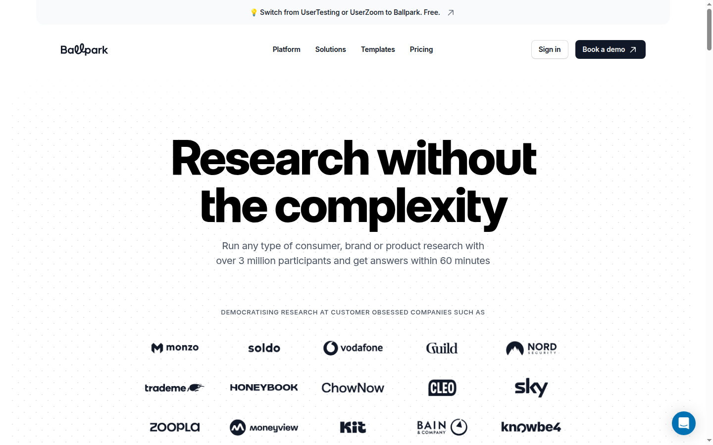

Démocratiser la recherche dans les équipes produit
Les équipes product / design jonglent souvent entre plusieurs outils (Maze pour les prototypes, Typeform pour les surveys, Lookback pour les interviews). Ballpark regroupe ces méthodes dans une interface unique, pensée pour être utilisable sans être chercheur.
Un builder visuel, des tâches multi-formats
On assemble une étude comme on monte une présentation. On mixe survey, vidéo, tests de prototype (Figma), tests de site, copy test, preference test, first click, 5-second test, card sorting, recrutement via screeners, ou interviews en direct. L'IA génère des reels de réactions et des rapports à partir des données collectées.
Figma natif — test de maquettes sans plugin, suivi des clics, conversions par étape et vue des chemins empruntés.
Interface
Capture de la page d'accueil — ballparkhq.com.

Lecture objective
Pour
- Couvre surveys, tests, prototypes, interviews dans un seul outil.
- Intégration Figma profonde (paths, conversions).
- Sièges illimités sur tous les plans.
- Highlights et rapports IA automatiques.
- Essai gratuit de 14 jours, accès complet.
Contre
- Tarifs non publics, deux plans enterprise uniquement.
- Recrutement participants à 1 $ / crédit en supplément.
- Code fermé, pas de self-host.
- Plateforme jeune (2022) — écosystème moins mature que les leaders.
Tarification publique
Essai — 14 jours gratuits, accès complet. Payant — deux plans Enterprise Platform et Enterprise Managed, sur devis. Recrutement de participants à partir de 1 $ / crédit-minute en add-on.